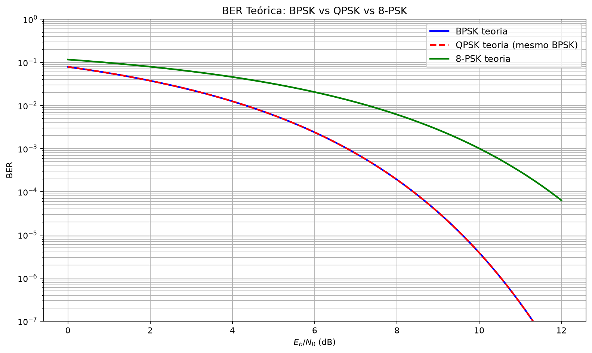
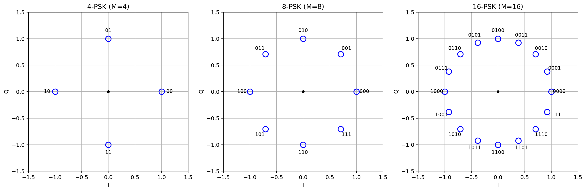
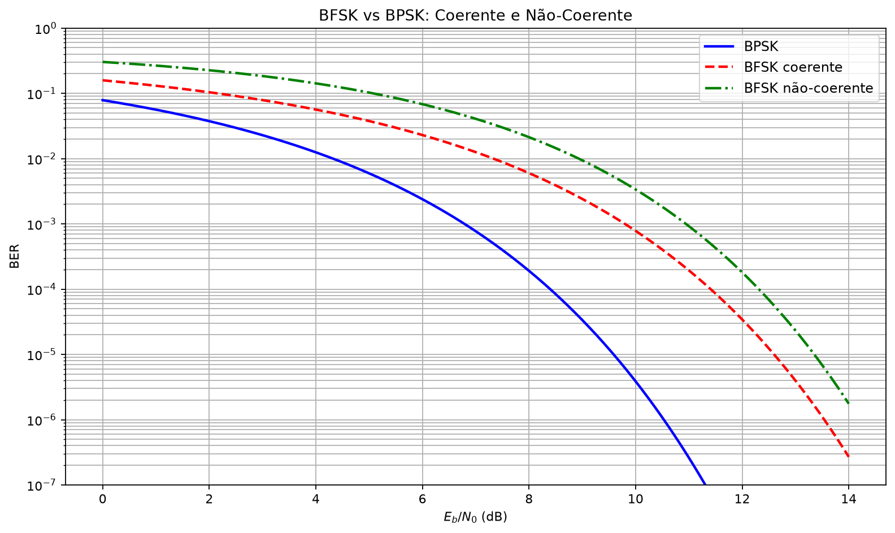
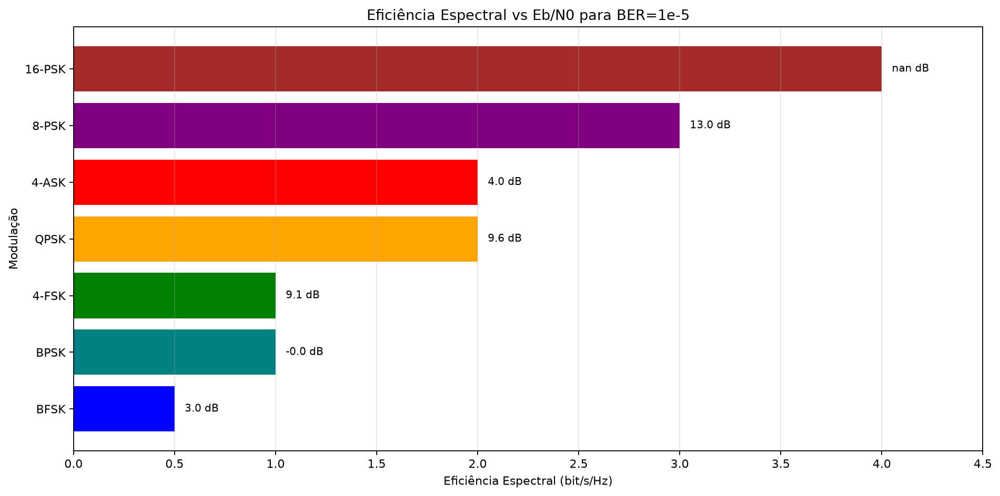

Transmissão Digital em Banda Passante: ASK, PSK e FSK
Antes de começar
Ao final, você deve representar modulações em espaço de sinais, construir regiões ML e comparar ASK, PSK e FSK por distância, BER, banda e complexidade. Diagnóstico: dois esquemas com a mesma energia média necessariamente têm a mesma BER? Evidência mínima: obter ao menos uma curva simulada com barras ou intervalos de incerteza e confrontá-la com a teoria.
Espaço de Sinais e Decisão Máxima-Verossimilhança
Representação de Karhunen-Loève
Teorema 1.1 (Representação de sinais em espaço de dimensão finita). Dado um conjunto de \(M\) sinais \(\{s_i(t)\}_{i=0}^{M-1}\) de duração \(T_s\) e energia finita, existe uma base ortonormal \(\{\phi_k(t)\}_{k=1}^{N}\) com \(N \le M\) tal que:
Os coeficientes \(s_{ik} = \int_0^{T_s} s_i(t)\phi_k(t)\,dt\) formam o vetor de sinal \(\mathbf{s}_i = (s_{i1}, \dots, s_{iN}) \in \mathbb{R}^N\).
Definição: O espaço de sinais é o espaço euclidiano \(\mathbb{R}^N\) cujos pontos são as constelações (vetores de símbolos). A distância euclidiana entre dois pontos \(\mathbf{s}_i\) e \(\mathbf{s}_j\) é:
Receptor Ótimo em AWGN
Teorema 1.2 (Decisão máxima-verossimilhança em AWGN). Seja o sinal recebido \(r(t) = s_i(t) + n(t)\), onde \(n(t)\) é AWGN com PSD bilateral \(N_0/2\). O receptor que minimiza a probabilidade de erro (para símbolos equiprováveis) é:
Prova:
A densidade de probabilidade condicional do vetor recebido \(\mathbf{r}\) dado que \(\mathbf{s}_i\) foi transmitido é Gaussiana multivariada:
Para símbolos equiprováveis \(P(i) = 1/M\), a regra de máxima-verossimilhança é \(\arg\max_i p(\mathbf{r}|\mathbf{s}_i)\), equivalente a \(\arg\min_i \|\mathbf{r} - \mathbf{s}_i\|^2\). Expandindo:
O termo \(\|\mathbf{r}\|^2\) é comum a todos os \(i\), então a decisão é \(\arg\max_i (\mathbf{r} \cdot \mathbf{s}_i - \frac{1}{2}\|\mathbf{s}_i\|^2)\). \(\blacksquare\)
Implementação: Correlator ou Filtro Casado
Definição: O receptor correlaciona \(r(t)\) com cada forma de onda candidata:
Equivalente: filtro casado \(h_k(t) = \phi_k(T_s - t)\) para cada \(\phi_k\), amostra em \(t = T_s\).
Importante: A distância mínima da constelação \(d_{\min} = \min_{i \ne j}\|\mathbf{s}_i - \mathbf{s}_j\|\) governa a probabilidade de erro. Quanto maior \(d_{\min}\) para uma dada energia média, menor a BER.
Probabilidade de Erro em Função da Distância
Para dois sinais antipodais \(\pm\mathbf{s}\) (\(\|\mathbf{s}\|^2 = E\)), em AWGN:
O denominador contém metade da distância entre os sinais e o desvio padrão \(\sqrt{N_0/2}\) do ruído projetado. Para BPSK, \(E=E_b\), recuperando \(P_b=Q(\sqrt{2E_b/N_0})\).
Para \(M\) sinais hipercúbicos (M-PAM):
M-ASK — Teoria Completa
Definição do Sinal M-ASK
Definição: M-ASK (M-Amplitude Shift Keying) transmite \(M\) símbolos por meio de \(M\) amplitudes distintas da portadora:
Definição: A base ortonormal para M-ASK é \(\phi(t) = \sqrt{2/T_s}\cos(2\pi f_c t)\), de modo que:
Os pontos da constelação estão em uma linha (dimensão \(N = 1\)).
Mapeamento de Amplitudes
Para energia normalizada (energia média por símbolo unitária), as amplitudes são igualmente espaçadas e simétricas em torno de zero:
O espaçamento é \(2d\). A energia média do símbolo é:
Com \(A_m = (2m - M + 1)d\):
Logo:
Teorema 2.1 (Espaçamento normalizado M-ASK). Para energia média por símbolo \(E_s\):
Potência e Eficiência
A potência média transmitida é \(P = E_s/T_s\). A eficiência espectral é:
onde \(B\) é a largura de banda do sinal modulado. Para ASK com pulso de Nyquist RC, \(B = (1+\alpha)/(2T_s)\) em banda base, ou \(B = (1+\alpha)/T_s\) em banda passante (duplicada).
Observação: no espaço de sinais, a distância entre vizinhos é \(D_{\min}=2d\sqrt{T_s/2}\); portanto, \(D_{\min}^2=12E_s/(M^2-1)\). É essa distância — não o espaçamento de amplitude isolado — que entra na probabilidade de erro.
Casos Particulares
OOK: é assimétrica, \(\{0,s_1\}\), e não coincide com a M-ASK simétrica da Seção “Mapeamento de Amplitudes”. Se \(E_1\) é a energia do símbolo ligado, \(P_b=Q(\sqrt{E_1/(2N_0)})\). Para bits equiprováveis, a energia média é \(\bar E_b=E_1/2\), logo:
4-ASK: Constelação \(\{-3d, -d, d, 3d}\) normalizada. Transporta 2 bits/símbolo. BER aproximada:
16-ASK: 4 bits/símbolo. BER aproximada:
Desvantagem do M-ASK
Resultado 2.1 (Desvantagem energética do M-ASK). A distância mínima normalizada é \(d_{\min}^2 = \frac{12E_b\log_2 M}{(M^2-1)}\), que para \(M\) grande se comporta como \(\frac{12E_b\log_2 M}{M^2}\). Para cada dobro da ordem, a distância cai quadráticamente, exigindo \(4\times\) mais energia por bit para manter a mesma BER.
Comparação: BPSK (\(M=2\) PSK) tem \(d_{\min}^2 = 4E_b\). 16-ASK tem \(d_{\min}^2 \approx \frac{12E_b\cdot 4}{255} \approx 0{,}188E_b\). BPSK é ~21× melhor em distância mínima.
Dedução da Probabilidade de Erro M-ASK
Densidade de Probabilidade Condicionada
Prova da BER M-ASK:
Considere a M-ASK simétrica e denote por \(D=2d\sqrt{T_s/2}\) a distância entre pontos adjacentes no espaço de sinais. A fronteira fica no ponto médio, a \(D/2\) de cada vizinho. Como a projeção do ruído tem desvio \(\sigma=\sqrt{N_0/2}\), um ponto interno possui duas caudas de erro:
Cada ponto de borda possui apenas uma cauda. Fazendo a média dos dois pontos de borda e dos \(M-2\) internos:
Conversão para BER
Usando Gray coding (aproximação boa para M grande), cada erro de símbolo troca tipicamente 1 bit:
Como \(D^2=12E_s/(M^2-1)=12E_b\log_2M/(M^2-1)\):
Verificação para M = 2:
Isso é BPSK, pois a M-ASK simétrica com \(M=2\) tem pontos antipodais. OOK é tratado separadamente na Seção “Casos Particulares”.
Se a energia do símbolo ligado for denotada por \(E_1\), OOK possui \(P_b=Q(\sqrt{E_1/(2N_0)})\); com bits equiprováveis, \(E_1=2\bar E_b\) e resulta \(Q(\sqrt{\bar E_b/N_0})\).
Interpretação
Resultado 3.1. Para M-ASK, o argumento da Q-função contém o fator \(\sqrt{6\log_2M/(M^2-1)}\). Para \(M=2^k\) grande, ele decai aproximadamente como \(\sqrt{6k}/2^k\), explicando a baixa eficiência energética de ASK de alta ordem.
BPSK — Teoria e Optimalidade
Definição BPSK
Definição: BPSK (Binary Phase Shift Keying) usa duas fases opostas (antipodais) para representar bits:
No espaço de sinais, os dois pontos são \(\pm\sqrt{E_b}\) em \(\mathbb{R}^1\). A distância entre eles é \(2\sqrt{E_b}\).
DEDUÇÃO da BER BPSK
Prova:
O receptor correlaciona \(r(t)\) com \(\phi(t) = \sqrt{2/T_b}\cos(2\pi f_c t)\):
onde \(n \sim \mathcal{N}(0, N_0/2)\). O limiar ótimo (equiprovável) é \(0\).
Erro ocorre se \(n > 0\) quando \(-\sqrt{E_b}\) foi transmitido, ou se \(n < 0\) quando \(+\sqrt{E_b}\) foi transmitido. Por simetria:
Teorema da Optimalidade BPSK
Teorema 4.1 (BPSK é ótima em AWGN). Entre todas as modulações com 2 símbolos de energia \(E_b\), BPSK (sinais antipodais) minimiza a probabilidade de erro em AWGN.
Prova: A probabilidade de erro para 2 símbolos é \(P_e = Q(d_{\min}/(2\sqrt{N_0/2}))\). Para energia fixa \(E\), o máximo de \(d_{\min}\) é \(2\sqrt{E}\) (antipodal), dado por \(d_{\min}^2 = \|\mathbf{s}_1 - \mathbf{s}_0\|^2 = 4E\) quando \(\mathbf{s}_1 = -\mathbf{s}_0\). \(\blacksquare\)
Detecção Coerente
O detector coerente BPSK usa:
- Recuperação de portadora: PLL ou Costas loop para estimar a fase da portadora.
- Correlador: \(r = \int r(t)\sqrt{2/T_b}\cos(2\pi f_c t + \hat{\phi}) dt\).
- Decisão: \(\hat{b} = 1\) se \(r > 0\), \(\hat{b} = 0\) se \(r < 0\).
Observação: A ambiguidade de fase de \(\pi\) (flip) é resolvida com codificação diferencial (DBPSK) ou preâmbulo de sincronismo.
BER BPSK em Tabela
| \(E_b/N_0\) (dB) | \(E_b/N_0\) (linear) | BER |
|---|---|---|
| 0 | 1 | \(Q(\sqrt{2}) \approx 0{,}0787\) |
| 3 | 2 | \(Q(2) \approx 0{,}0228\) |
| 6 | 4 | \(Q(\sqrt{8}) \approx 0{,}000317\) |
| 9,6 | 9 | \(Q(3) \approx 0{,}00135\) |
| 10 | \(\sim\)10 | \(Q(\sqrt{20}) \approx 2{,}87\times 10^{-5}\) |
QPSK — Teoria, Eficiência e Variação π/4
Definição QPSK
Definição: QPSK (Quadrature Phase Shift Keying) transporta 2 bits por símbolo usando 4 fases:
Os sinais são:
Representação I/Q
QPSK é equivalente a dois BPSK ortogonais:
Para \(\{\pi/4, 3\pi/4, 5\pi/4, 7\pi/4\}\): \(I, Q \in \{\pm\sqrt{E_s/T_s}\} = \{\pm\sqrt{E_b/T_b}\}\).
Cada eixo é independente BPSK com energia \(E_b\). Portanto:
DEDUÇÃO da BER QPSK
Prova:
O receptor QPSK decompõe \(r(t)\) em componentes I e Q ortogonais. Cada componente sofre decisão BPSK independente com energia \(E_b\) e ruído \(n_I, n_Q \sim \mathcal{N}(0, N_0/2)\):
A probabilidade de erro de símbolo é:
Para \(P_b \ll 1\): \(P_s \approx 2P_b\).
Eficiência Espectral QPSK
QPSK transmite dois bits por símbolo. Com pulsos de Nyquist de roll-off \(\alpha\), a largura de banda passante é aproximadamente \(B=(1+\alpha)R_s\); portanto:
Para \(\alpha=0\), o limite ideal é \(2\) bit/s/Hz; roll-off positivo reduz esse valor.
Observação: A eficiência de 2 bit/s/Hz é o dobro do BPSK. QPSK é amplamente usado em GPS, DVB-S, Wi-Fi (módulos iniciais), e satélites.
Gray Coding
Definição: Gray coding mapeia símbolos adjacentes na constelação para códigos binários com distância de Hamming 1.
Para QPSK com fases \(\{\pi/4, 3\pi/4, 5\pi/4, 7\pi/4\}\), o mapeamento Gray é:
| Fase | Bits (Gray) |
|---|---|
| \(\pi/4\) | 00 |
| \(3\pi/4\) | 01 |
| \(5\pi/4\) | 11 |
| \(7\pi/4\) | 10 |
Importante: Gray coding garante que, na BER baixa, o erro de símbolo cause em média ~1 erro de bit. Sem Gray, erros adjacentes podem causar 2 erros de bit.
QPSK π/4
Definição: QPSK π/4 é uma variação onde os constel points alternam entre dois conjuntos rotacionados de \(\pi/4\):
Motivação: Evita que a trajetória de fase cruze a origem (onde o envelope tende a zero), importante para amplificadores de potência não-lineares (eficiência energética).
Resultado: BER de \(\pi/4\)-QPSK é idêntica à do QPSK convencional. A diferença é na representação em fase relativa (diferencial) ou absoluta.
DQPSK
Definição: DQPSK (Differential QPSK) codifica informação na mudança de fase relativa entre símbolos consecutivos, eliminando a necessidade de recuperação de portadora coerente.
BER DQPSK (não-coerente): aproximadamente 2–3 dB pior que QPSK coerente na BER baixa.
M-PSK Geral e DPSK
Sinais M-PSK
Definição: M-PSK para \(M = 2^k\) usa \(M\) fases igualmente espaçadas:
A constelação é um polígono regular inscrito em círculo de raio \(\sqrt{E_s}\).
DEDUÇÃO da BER M-PSK
Prova:
A probabilidade de erro de símbolo M-PSK é a probabilidade de sair do setor angular de meia-largura \(\pi/M\). Para \(M\ge4\) e SNR moderada/alta, os dois vizinhos dominam:
Convertendo para BER com Gray coding (\(P_b \approx P_s/\log_2 M\)):
Para \(M=4\), a expressão recupera exatamente \(Q(\sqrt{2E_b/N_0})\). Para \(M=2\), há apenas um vizinho, não dois, e deve-se usar diretamente a fórmula BPSK \(Q(\sqrt{2E_b/N_0})\); portanto, (6.2)–(6.3) não devem ser extrapoladas para \(M=2\).
DEDUÇÃO do Limite Assintótico
Resultado 6.1 (Limite assintótico M-PSK). Para \(M\) grande, \(\sin(\pi/M) \approx \pi/M\):
Para \(M = 2^k\), \(\log_2 M = k\), \(\pi/M = \pi/2^k\):
Para \(k\) grande, o argumento decai exponencialmente:
Observação: M-PSK cresce em eficiência espectral (\(\log_2 M\) bits/s/Hz), mas exige energia exponencialmente maior para manter BER fixa.
DPSK (Differential PSK)
Definição: DPSK codifica informação na mudança de fase entre símbolos consecutivos.
BDPSK (Binary DPSK): \(\Delta\phi \in \{0, \pi\}\). Decodificação: \(\hat{b}_k = 1\) se \(\cos(\phi_k - \phi_{k-1}) > 0\).
BER BDPSK:
Comparação BDPSK vs BPSK: para \(P_b=10^{-3}\), BPSK coerente requer aproximadamente \(6{,}79\) dB e BDPSK aproximadamente \(7{,}93\) dB: penalidade de \(1{,}14\) dB nesse ponto. A penalidade tende a cerca de 3 dB apenas no limite de BER muito baixa.
DQPSK: usa quatro mudanças de fase, normalmente com mapeamento Gray. Sua BER depende do detector diferencial e não é obtida dividindo diretamente a expressão de BDPSK por dois; deve ser calculada a partir das regiões de decisão diferenciais ou avaliada numericamente.
M-FSK — Teoria
Definição M-FSK Ortogonal
Definição: M-FSK (M-Frequency Shift Keying) transmite \(M\) símbolos por meio de \(M\) frequências distintas:
Ortogonalidade
Os sinais são ortogonais se:
Para portadoras coerentes cujas fases são conhecidas e escolhidas de modo compatível com a janela, a separação mínima usual é:
A menor separação é:
Cuidado: anular apenas o termo de diferença não basta para provar ortogonalidade exata; o termo de soma também deve integrar a zero. Isso ocorre quando as frequências estão na grade apropriada. Em detecção não coerente, a separação mínima usual é \(1/T_s\), pois seno e cosseno de fase desconhecida precisam ser ortogonais. Pulsos suavizados alteram a banda ocupada e a interferência entre tons.
Recepção M-FSK
O receptor possui \(M\) correlatores (ou filtros casados), cada um sintonizado em uma frequência. A decisão é \(\hat{m} = \arg\max_k r_k\), onde \(r_k\) é a saída do correlator \(k\).
Definição: FSK coerente: o receptor usa fase conhecida. FSK não-coerente: o receptor usa envelope (detector de energia).
Largura de Banda
A banda total ocupada é:
onde \(B_p\) é a largura efetiva de um único tom após a conformação de pulso. Usar \(M\Delta f\) é apenas uma estimativa de ordem de grandeza quando \(B_p\approx\Delta f\).
Ou, pela regra de Carson (modulação de frequência contínua):
Para FSK digital: \(B \approx M/(2T_s)\) com separação mínima.
Resultado: FSK é menos eficiente espectralmente que PSK/ASK. Cada bit extra exige duplicação de frequência (ou mais), mas é mais robusto energeticamente.
Eficiência Energética do FSK
Resultado 7.1. M-FSK é energeticamente eficiente (baixa BER para mesma \(E_b/N_0\)), mas espectralmente ineficiente. BFSK coerente ortogonal tem BER \(Q(\sqrt{E_b/N_0})\), que é 3 dB pior que BPSK, mas BFSK não-coerente tem \(P_b = \frac{1}{2}e^{-E_b/(2N_0)}\), com vantagem de simplicidade (sem carrier recovery).
Dedução da Probabilidade de Erro M-FSK
M-FSK Coerente
Prova:
Para M-FSK coerente ortogonal, cada correlator real produz uma variável Gaussiana. Se \(m\) foi transmitido, \(r_m\) tem média \(\sqrt{E_s}\); os demais têm média zero; todos têm variância \(N_0/2\).
A probabilidade de erro de símbolo é a probabilidade de algum correlator errado exceder o correto:
Para M grande e BER baixa, a união é dominada pelos eventos individuais:
Convertendo para BER:
Todos os tons errados estão à mesma distância do tom correto. Logo, não existe rotulagem Gray que torne todos os erros vizinhos erros de um bit. Por simetria, condicionado a um erro, o tom decidido é uniforme entre os \(M-1\) incorretos; a distância de Hamming média é \(kM/[2(M-1)]\), com \(k=\log_2M\). Assim,
onde a última expressão é a aproximação/limitante de união em alta SNR. Para \(M=2\), ela fornece exatamente \(Q(\sqrt{E_b/N_0})\).
M-FSK Não-Coerente
Prova:
No detector não-coerente, cada correlator é substituído por um detector de envelope (retificador + filtro). A saída é uma variável de Rician (símbolo correto) ou Rayleigh (símbolos errados).
Para M-FSK não-coerente:
Uma expressão exata útil é
Em alta SNR, o primeiro termo domina: \(P_s\approx(M-1)e^{-E_s/(2N_0)}/2\). A BER volta a ser \(M P_s/[2(M-1)]\) para qualquer rotulagem binária balanceada.
Para BFSK não-coerente (\(M=2\)):
Comparação BFSK:
- Coerente ortogonal: \(P_b = Q(\sqrt{E_b/N_0})\).
- Não-coerente: \(P_b = \frac{1}{2}e^{-E_b/(2N_0)}\).
- BPSK: \(P_b = Q(\sqrt{2E_b/N_0})\).
Para BER \(= 10^{-5}\): BPSK 9,6 dB, BFSK coerente 12,6 dB (3 dB penalidade), BFSK não-coerente ~13,8 dB (4,2 dB penalidade).
Comparação Rigorosa de Modulações Digitais
Tabela Comparativa
| Modulação | BER (aprox.) | Eficiência (bit/s/Hz) | Complexidade | Notas |
|---|---|---|---|---|
| BPSK | \(Q(\sqrt{2\gamma})\) | 1 | Baixa | Ótimo BER, simples |
| QPSK | \(Q(\sqrt{2\gamma})\) | 2 | Média | Mesmo BER; 2× mais bits por símbolo |
| 8-PSK | \(\frac{2}{3}Q(\sqrt{6\gamma}\sin\frac{\pi}{8})\) | 3 | Média-Alta | \(\sin(\pi/8) \approx 0{,}383\) |
| 16-PSK | \(\frac{1}{2}Q(\sqrt{8\gamma}\sin\frac{\pi}{16})\) | 4 | Alta | \(\sin(\pi/16) \approx 0{,}195\) |
| BFSK coer. | \(Q(\sqrt{\gamma})\) | 0,5 | Baixa | 3 dB pior que BPSK |
| BFSK não-coer. | \(\frac{1}{2}e^{-\gamma/2}\) | 0,5 | Muito baixa | 4,2 dB pior que BPSK |
| 4-ASK | \(\frac{3}{4}Q(\sqrt{\frac{4\gamma}{5}})\) | 2 | Baixa | Sensível a ruído |
| 16-QAM | \(\frac{3}{4}Q(\sqrt{\frac{4\gamma}{5}})\) | 4 | Alta | Eficiente, sensível a fase |
Curvas de BER
Resultado 9.1 (fronteira de compromisso). Dentro de famílias de constelações limitadas em banda, elevar a ordem geralmente aumenta a eficiência espectral e reduz a distância normalizada, exigindo mais \(E_b/N_0\):
Isso não é uma implicação válida para “qualquer modulação” isoladamente: M-FSK, por exemplo, pode melhorar a eficiência energética ao gastar muito mais banda. O limite de Shannon descreve a fronteira global entre potência e banda; FEC aproxima o sistema dessa fronteira.
Observação sobre M-QAM
Observação 9.1: M-QAM (M-Quadrature Amplitude Modulation) combina amplitude e fase, formando uma constelação 2D. 16-QAM, 64-QAM e 256-QAM são padrão em Wi-Fi, LTE e 5G. QAM é mais eficiente que PSK para mesma ordem (maior \(d_{\min}\) para mesma energia), mas mais sensível a ruído de fase e não-linearidades.
A BER 16-QAM é aproximada por:
Exercícios Resolvidos em Python
Protocolo computacional
Objetivo: comparar constelações, distância mínima, eficiência e BER de ASK, PSK e FSK. Normalização: fixe \(E_b\) ou \(E_s\) explicitamente e converta \(E_s/N_0=\log_2(M)E_b/N_0\). Monte Carlo: use semente fixa e ao menos 100 erros por ponto, ou reporte intervalo de confiança/limite superior.
Exercício 1: BER de BPSK vs QPSK vs 8-PSK — Plot Comparativo
import numpy as np
import matplotlib.pyplot as plt
from scipy.special import erfc
Q = lambda x: 0.5 * erfc(x / np.sqrt(2))
ebn0_db = np.linspace(0, 12, 200)
gamma = 10**(ebn0_db / 10)
# BER teórica
ber_bpsk = Q(np.sqrt(2 * gamma))
ber_qpsk = Q(np.sqrt(2 * gamma)) # mesmo BER que BPSK
ber_8psk = (2 / np.log2(8)) * Q(np.sqrt(2 * gamma * np.log2(8)) * np.sin(np.pi / 8))
fig, ax = plt.subplots(figsize=(10, 6))
ax.semilogy(ebn0_db, ber_bpsk, 'b-', linewidth=2, label='BPSK teoria')
ax.semilogy(ebn0_db, ber_qpsk, 'r--', linewidth=2, label='QPSK teoria (mesmo BPSK)')
ax.semilogy(ebn0_db, ber_8psk, 'g-', linewidth=2, label='8-PSK teoria')
ax.set(xlabel='$E_b/N_0$ (dB)', ylabel='BER',
title='BER Teórica: BPSK vs QPSK vs 8-PSK')
ax.grid(True, which='both')
ax.legend(fontsize=11)
ax.set_ylim(1e-7, 1)
plt.tight_layout()
plt.show()
Exercício 2: Constelações M-PSK para M = 4, 8, 16
import numpy as np
import matplotlib.pyplot as plt
def plot_constellation(M, title="", marker='o', color='b'):
angles = 2 * np.pi * np.arange(M) / M
# normalizar a energia média a 1
points = np.exp(1j * angles)
points = points / np.sqrt(np.mean(np.abs(points)**2))
plt.plot(points.real, points.imag, marker, markersize=10,
markerfacecolor='none', markeredgecolor=color, markeredgewidth=1.5)
for i, angle in enumerate(angles):
plt.annotate(f'{i:0{int(np.ceil(np.log2(M)))}b}',
(points.real[i]*1.15, points.imag[i]*1.15),
fontsize=8, ha='center', va='center')
plt.plot(0, 0, 'k.', markersize=8)
plt.xlabel('I (in-phase)')
plt.ylabel('Q (quadrature)')
plt.title(title)
plt.grid(True, alpha=0.3)
plt.axis('equal')
plt.xlim(-1.5, 1.5)
plt.ylim(-1.5, 1.5)
fig, axes = plt.subplots(1, 3, figsize=(15, 5))
for ax, M in zip(axes, [4, 8, 16]):
angles = 2 * np.pi * np.arange(M) / M
points = np.exp(1j * angles)
points = points / np.sqrt(np.mean(np.abs(points)**2))
ax.plot(points.real, points.imag, 'o', markersize=10,
markerfacecolor='none', markeredgecolor='b', markeredgewidth=1.5)
for i, angle in enumerate(angles):
ax.annotate(f'{i:0{int(np.ceil(np.log2(M)))}b}',
(points.real[i]*1.15, points.imag[i]*1.15),
fontsize=9, ha='center', va='center')
ax.plot(0, 0, 'k.', markersize=8)
ax.set(xlabel='I', ylabel='Q', title=f'{M}-PSK (M={M})',
xlim=(-1.5, 1.5), ylim=(-1.5, 1.5), aspect='equal')
ax.grid(True)
plt.tight_layout()
plt.show()
Exercício 3: BER de BFSK vs BPSK
import numpy as np
import matplotlib.pyplot as plt
from scipy.special import erfc
Q = lambda x: 0.5 * erfc(x / np.sqrt(2))
ebn0_db = np.linspace(0, 14, 300)
gamma = 10**(ebn0_db / 10)
ber_bpsk = Q(np.sqrt(2 * gamma))
ber_bfsk_coh = Q(np.sqrt(gamma))
ber_bfsk_ncoh = 0.5 * np.exp(-gamma / 2)
fig, ax = plt.subplots(figsize=(10, 6))
ax.semilogy(ebn0_db, ber_bpsk, 'b-', linewidth=2, label='BPSK')
ax.semilogy(ebn0_db, ber_bfsk_coh, 'r--', linewidth=2, label='BFSK coerente')
ax.semilogy(ebn0_db, ber_bfsk_ncoh, 'g-.', linewidth=2, label='BFSK não-coerente')
ax.set(xlabel='$E_b/N_0$ (dB)', ylabel='BER',
title='BFSK vs BPSK: Coerente e Não-Coerente')
ax.grid(True, which='both')
ax.legend(fontsize=11)
ax.set_ylim(1e-7, 1)
plt.tight_layout()
plt.show()
Exercício 4: Eficiência Espectral vs Ordem de Modulação
import numpy as np
import matplotlib.pyplot as plt
# Eficiência espectral e BER necessária para 1e-5
from scipy.special import erfc
Qinv = lambda p: np.sqrt(2) * erfc(2 * p)
modulations = {
'BPSK': {'M': 2, 'type': 'psk', 'eta': 1.0},
'QPSK': {'M': 4, 'type': 'psk', 'eta': 2.0},
'8-PSK': {'M': 8, 'type': 'psk', 'eta': 3.0},
'16-PSK': {'M': 16, 'type': 'psk', 'eta': 4.0},
'BFSK': {'M': 2, 'type': 'fsk_coh', 'eta': 0.5},
'4-FSK': {'M': 4, 'type': 'fsk_coh', 'eta': 1.0},
'4-ASK': {'M': 4, 'type': 'ask', 'eta': 2.0},
}
target_ber = 1e-5
results = []
for name, info in modulations.items():
M = info['M']
eta = info['eta']
if info['type'] == 'psk':
# Inverter BER para encontrar Eb/N0
# P_b = (2/log2(M)) * Q(sqrt(2*Eb/N0 * log2(M)) * sin(pi/M))
sin_pi_M = np.sin(np.pi / M)
if M == 2:
arg = Qinv(target_ber)
ebn0 = arg**2 / 2
else:
# resolver numericamente
from scipy.optimize import brentq
def eq(g):
return (2/np.log2(M)) * 0.5*erfc(np.sqrt(2*g*np.log2(M))*sin_pi_M/np.sqrt(2)) - target_ber
try:
ebn0 = brentq(eq, 0.1, 30)
except:
ebn0 = np.nan
elif info['type'] == 'fsk_coh':
# P_b ≈ (M-1)/(M*log2(M)) * Q(sqrt(Eb*log2(M)/N0))
if M == 2:
arg = Qinv(target_ber * 2) # (M-1)/M = 0.5 for M=2
ebn0 = arg**2
else:
from scipy.optimize import brentq
def eq(g):
return (M-1)/(M*np.log2(M)) * 0.5*erfc(np.sqrt(g*np.log2(M)/2)) - target_ber
try:
ebn0 = brentq(eq, 0.1, 30)
except:
ebn0 = np.nan
elif info['type'] == 'ask':
# P_b ≈ 2(M-1)/(M*k) * Q(sqrt(6*k*Eb/((M^2-1)N0)))
coeff = 2*(M-1)/(M*np.log2(M))
inner = 6*np.log2(M)/(M**2-1)
arg = Qinv(target_ber / coeff)
ebn0 = arg**2 / inner
results.append((name, eta, 10*np.log10(ebn0) if not np.isinf(ebn0) else 999))
results.sort(key=lambda x: x[1])
names = [r[0] for r in results]
etas = [r[1] for r in results]
db_vals = [r[2] for r in results]
fig, ax = plt.subplots(figsize=(12, 6))
bars = ax.barh(names, etas, color=['blue','teal','green','orange','red','purple','brown'])
for i, (bar, db) in enumerate(zip(bars, db_vals)):
ax.text(bar.get_width() + 0.05, bar.get_y() + bar.get_height()/2,
f'{db:.1f} dB', va='center', fontsize=9)
ax.set(xlabel='Eficiência Espectral (bit/s/Hz)',
ylabel='Modulação',
title='Eficiência Espectral vs Eb/N0 para BER=1e-5',
xlim=(0, max(etas)+0.5))
ax.grid(axis='x', alpha=0.3)
plt.tight_layout()
plt.show()
Lista de Exercícios Propostos
E1. Para M-ASK, distinga o espaçamento entre amplitudes físicas, \(2d\), da distância \(D_{\min}\) após projeção na base ortonormal. Derive ambos em função de \(E_b\), \(M\) e \(T_s\).
E2. Calcule a BER aproximada de 16-ASK a \(E_b/N_0 = 12\) dB.
E3. Prove que a BER do BPSK é \(Q(\sqrt{2E_b/N_0})\) a partir da densidade Gaussiana.
E4. Mostre que QPSK com Gray coding tem o mesmo BER de BPSK para o mesmo \(E_b/N_0\).
E5. Para QPSK, calcule a probabilidade de erro de símbolo \(P_s\) e demonstre que \(P_s \approx 2P_b\) para \(P_b \ll 1\).
E6. Derive a BER de M-PSK para \(M = 8\) e compare numericamente com \(M = 4\) (QPSK) a \(E_b/N_0 = 8\) dB.
E7. Mostre que para M-FSK coerente, a probabilidade de erro de símbolo é \(P_s \approx (M-1)Q(\sqrt{E_s/N_0})\).
E8. Para BDPSK, calcule o \(E_b/N_0\) necessário para BER \(= 10^{-3}\) e compare com BPSK.
E9. Para BFSK e 4-FSK coerentes com \(T_s=1\,\mu\)s, calcule a separação mínima entre tons. Depois estime a extensão entre o primeiro e o último tom e explique por que a banda ocupada total ainda depende da conformação de pulso.
E10. Trace o espaço de sinais para 8-PSK e identifique a distância mínima entre pontos adjacentes.
E11. Demonstre que a eficiência espectral do 16-QAM é 4 bit/s/Hz e calcule sua BER aproximada a \(E_b/N_0 = 14\) dB.
E12. Explique por que o FSK é preferível em canais com amplificadores de potência não-lineais (efeito amplitude-to-phase).
Gabarito
E1. Da Seção “M-ASK — Teoria Completa”, \(d=\sqrt{6E_b\log_2M/[T_s(M^2-1)]}\); portanto, o espaçamento de amplitude é \(2d\). Após projeção, cada amplitude é multiplicada por \(\sqrt{T_s/2}\), logo \(D_{\min}=2d\sqrt{T_s/2}=\sqrt{12E_b\log_2M/(M^2-1)}\). A dependência em \(T_s\) desaparece da distância energética.
E2. Para \(M=16\) e \(\gamma_b=10^{1{,}2}\approx15{,}85\), \(x=\sqrt{6(4)\gamma_b/255}\approx1{,}221\). Assim, \(P_b\approx(15/32)Q(x)\approx(0{,}46875)(0{,}111)\approx\boxed{5{,}2\times10^{-2}}\). A aproximação de vizinho mais próximo já é menos precisa nessa BER alta, mas evidencia a fragilidade da 16-ASK.
E3. \(P_b = \int_{\sqrt{E_b}}^{\infty} \frac{1}{\sqrt{\pi N_0}}e^{-x^2/N_0}dx = Q(\sqrt{E_b/(N_0/2)}) = Q(\sqrt{2E_b/N_0})\). ✓
E4. QPSK: dois eixos ortogonais, cada um BPSK com energia \(E_b\). \(P_b = Q(\sqrt{2E_b/N_0})\). ✓
E5. \(P_s = 1-(1-P_b)^2 = 2P_b-P_b^2 \approx 2P_b\) para \(P_b \ll 1\). ✓
E6. Para 8-PSK, \(k=3\), \(\gamma_b=6{,}31\) e \(x=\sqrt{2k\gamma_b}\sin(\pi/8)\approx2{,}355\). Logo, \(P_b\approx(2/3)Q(x)\approx(2/3)(0{,}0093)\approx6{,}2\times10^{-3}\). Para QPSK, \(Q(\sqrt{2\gamma_b})\approx1{,}9\times10^{-4}\). A 8-PSK é cerca de 32 vezes pior nesse ponto.
E7. \(P_s = P(\exists j \ne m: r_j > r_m) \approx (M-1)P(r_j > r_m) = (M-1)Q(\sqrt{E_s/N_0})\). ✓
E8. DBPSK: \(10^{-3} = \frac{1}{2}e^{-\gamma} \Rightarrow \gamma = -\ln(2\times 10^{-3}) \approx 6{,}215\), ou \(7{,}93\) dB. BPSK coerente: \(Q(\sqrt{2\gamma}) = 10^{-3} \Rightarrow \gamma \approx 4{,}775\), ou \(6{,}79\) dB. Portanto, nesse ponto, a penalidade da detecção diferencial é \(\boxed{1{,}14\text{ dB}}\).
E9. A separação coerente mínima é \(\Delta f=1/(2T_s)=500\) kHz. A extensão entre tons extremos é \((M-1)\Delta f\): 500 kHz para BFSK e 1,5 MHz para 4-FSK. A banda total é essa extensão mais a largura \(B_p\) de um tom conformado; sem especificar o pulso e o critério de ocupação, não há um único valor de banda.
E10. 8-PSK: constelação em círculo raio \(\sqrt{E_s}\). \(d_{\min} = 2\sqrt{E_s}\sin(\pi/8) \approx 0{,}765\sqrt{E_s}\).
E11. 16-QAM transporta 4 bits/símbolo. Com pulso Nyquist ideal e a convenção de banda passante nula-a-nula, \(B\approx R_s\), logo \(\eta\approx4\) bit/s/Hz. Para mapeamento Gray em AWGN,
\(P_b\approx\frac{4}{\log_2M}(1-1/\sqrt M)Q\!\left(\sqrt{\frac{3\log_2M}{M-1}\gamma_b}\right)\). Para \(M=16\) e \(\gamma_b=10^{14/10}=25{,}12\): \(P_b\approx0{,}75Q(\sqrt{0{,}8\gamma_b})=0{,}75Q(4{,}48)\approx\boxed{2{,}8\times10^{-6}}\).
E12. Amplificadores não-lineares (classe C) convertem variações de amplitude em variações de fase (AM-PM). FSK tem envelope constante, evitando este efeito.